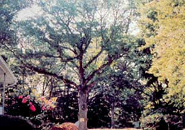
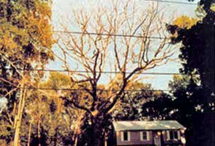

Just because your trees have made it through decades, or even centuries, of the hardest of Mother Nature's storms, fires and other disasters, it doesn't mean they can sail through your decision to put in a hot tub.
Here are six pointers from Dennis Brown, consulting arborist with Urban Forestry Resources in Austin, Texas, on how to protect trees during construction and remodelling projects:
1. Make a plan to minimize construction activities near trees. Trees don't heal like people do. Injuries might grow over, but they will never really go away. It might be too late, once you start to notice a tree is being affected. And most won't show signs until five to seven years down the road.
2. If you have to do some digging in a tree's root zone, try to consolidate the work. Plan a route that can be used for as many purposes as possible, such as utilities, foundations and trenches. Also try to minimize any changes in the land's drainage. Too much or too little water in the soil can kill a tree.
3. Don't use any more than 4 inches of fill soil over a tree's root zone. Adding extra soil interferes with a tree's ability to exchange gases in its feeder roots. Carbon dioxide will build up, literally suffocating the tree to death.
4. Suffocation can also happen if the soil in the tree's root zone is compacted by heavy machinery. Just three or four trips over the root zone by a bulldozer can cause lasting damage to a tree. If heavy equipment must be driven over the root zone, mitigate damage by putting down a wood chip mulch in the area. The mulch will absorb much of the pressure without compacting the soil.
5. Trees are bigger than you think. Brown says a good rule of thumb for estimating the spread of a tree's root system (vital for tree health) is to figure the root system extends out from the trunk three times the height of the tree.
6. Don't compensate for stressing the tree by adding fertilizer. Trees seldom benefit from fertilizers even when they are not stressed.
|
 DAVID SCHWARTZ A 125- year-old white oak in Hope, Rhode Island, before construction began on the neighboring house. |
 DAVID SCHWARTZ The same oak one year later after developers were forced to add 3 feet of fill soil over its roots to obtain a septic permit. |
|